Case Study · 03
Newsreadeck
All the news you care about in one place, stripped down to a calm, distraction-free read.
Role
UX/UI Designer
Platform
Web · iOS
Industry
News · Reading
Year
2023
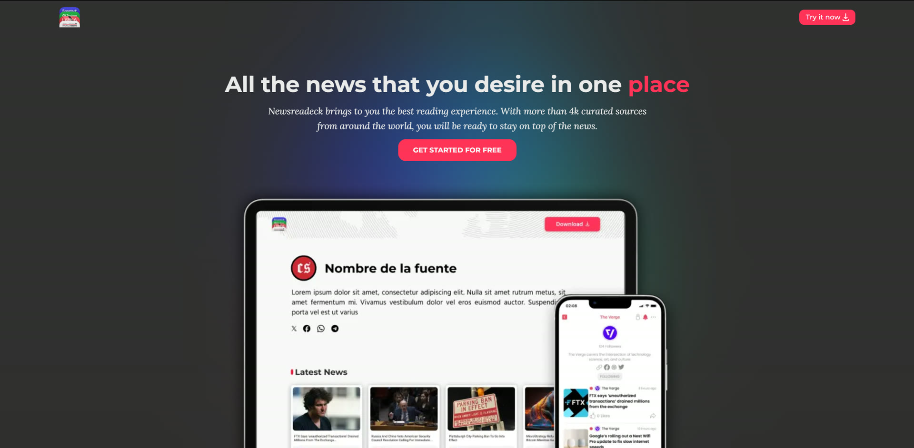
Overview
A modern reader for a noisy world.
Newsreadeck is a free news reader that gathers every newspaper, magazine and news portal you follow into a single, calm reading space, on the web and on iOS. No ads, no clutter, no mandatory sign-up.
The idea was a reading experience that gets out of the way: follow as many sources as you want, strip each article down to just the text, and even listen to it, all inside a clean, modern interface.
The Challenge
Making the news feel calm.
News apps are usually loud: ads, banners and endless feeds all competing for attention. Newsreadeck had to feel like the opposite, a focused space where the article is the only thing that matters.
-
01
Distraction-free reading
Strip each article down to clean text, with reader controls for font, size and color.
-
02
One place for every source
Let people follow unlimited newspapers, magazines and portals without friction.
-
03
Optional, not obligatory
A full experience with no forced registration; sign-in only to sync across devices.
-
04
Read or listen
Built-in text-to-speech so the news works hands-free, in the article's original language.
Interfaces
The design.
01 · Landing page
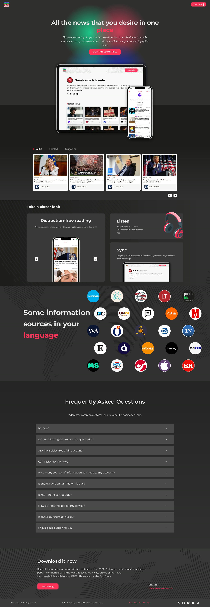
Full landing page. Scroll within the frame to see it all.
02 · Reading experience
The core of the product: a source profile that collects an outlet's latest stories, and a distraction-free reader that strips each article down to just the text.
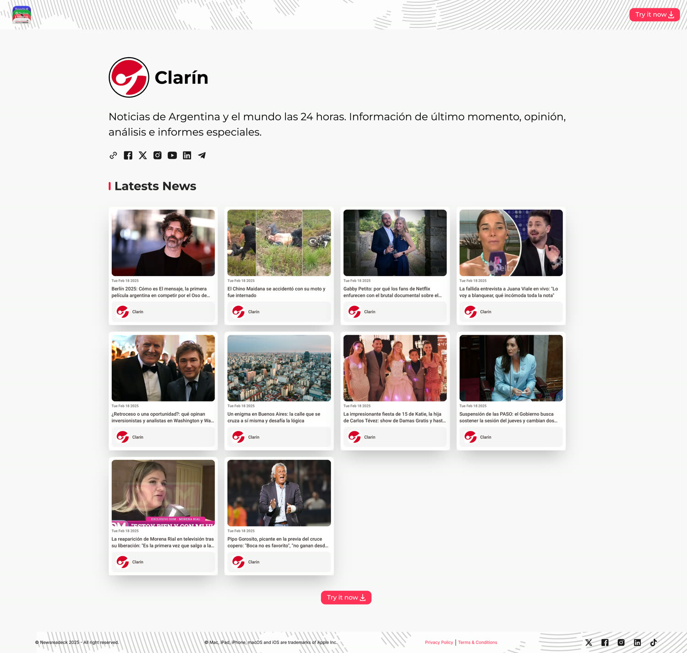
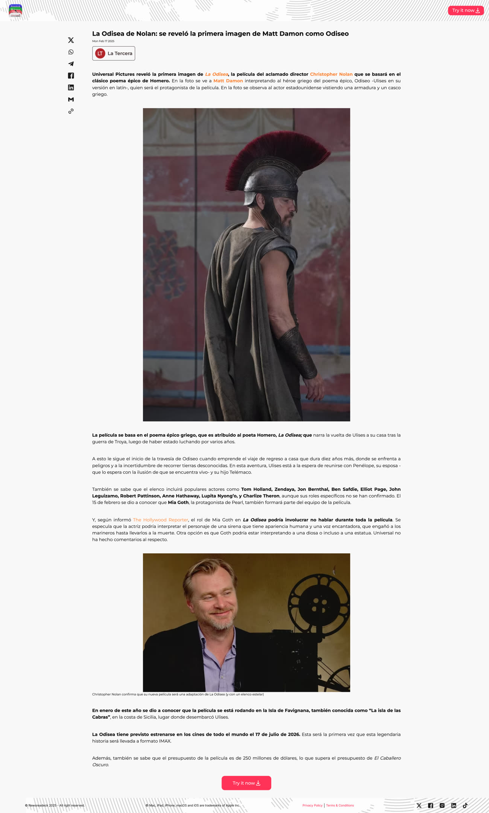
03 · Responsive
Every screen was designed to hold up from desktop down to a phone in one hand.
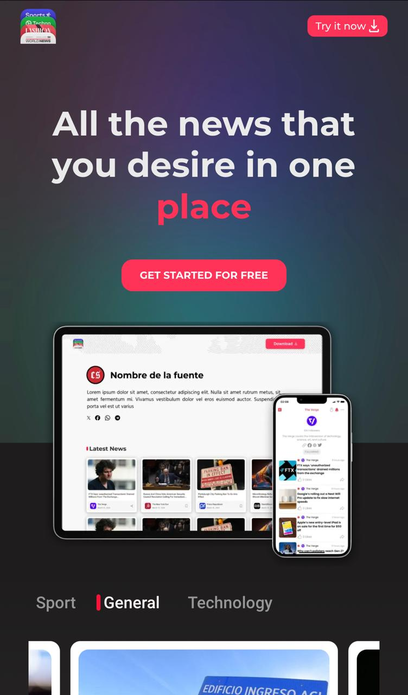
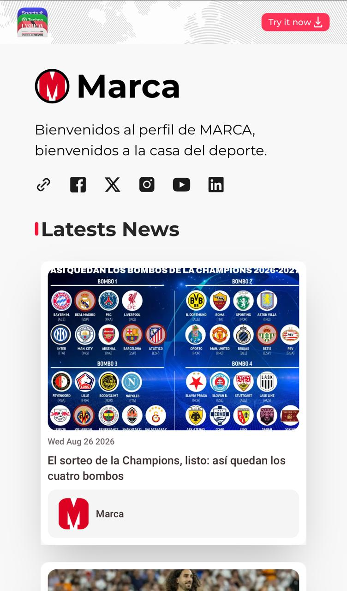
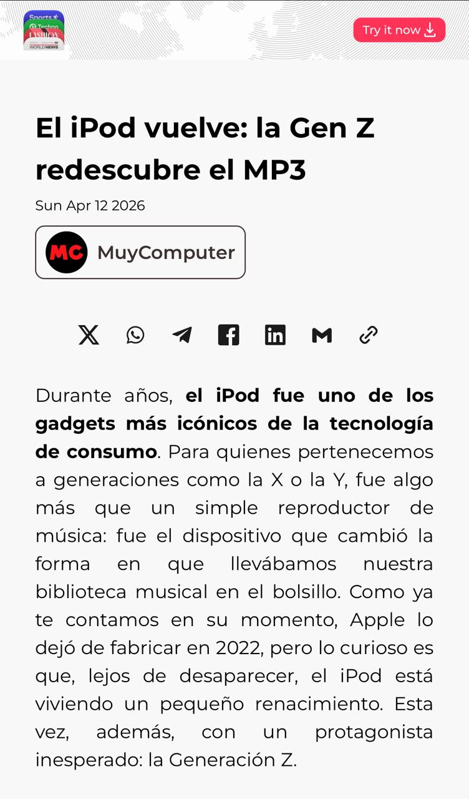
Live at newsreadeck.app · free iPhone app on the App Store.
Process
Directions I explored.
Before landing on the final look, I explored several visual directions for the hero and the overall tone: different layouts, palettes and calls to action. A few that did not make the cut, kept here as a record of the process.
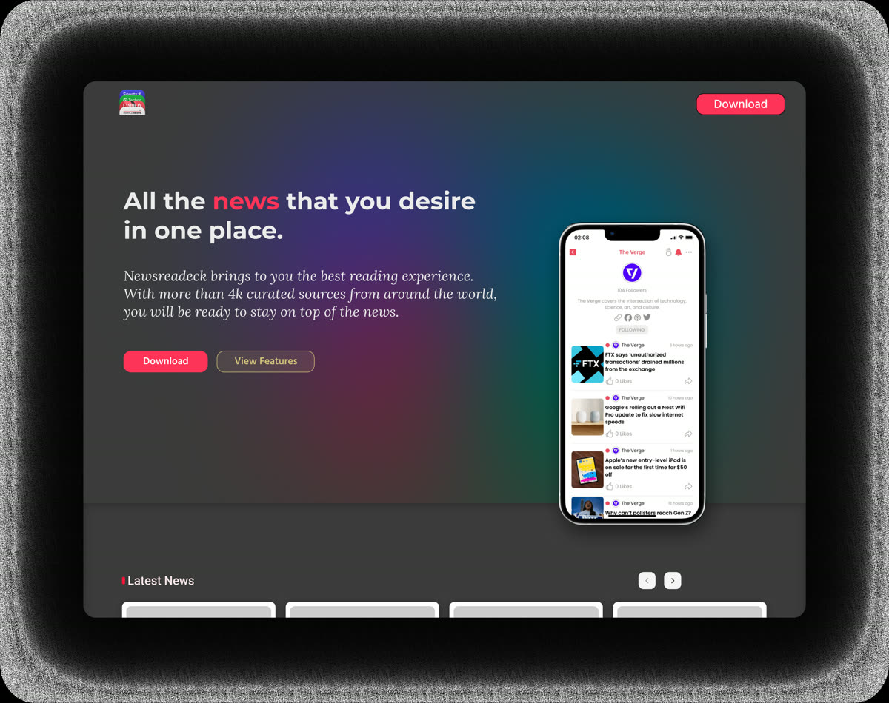
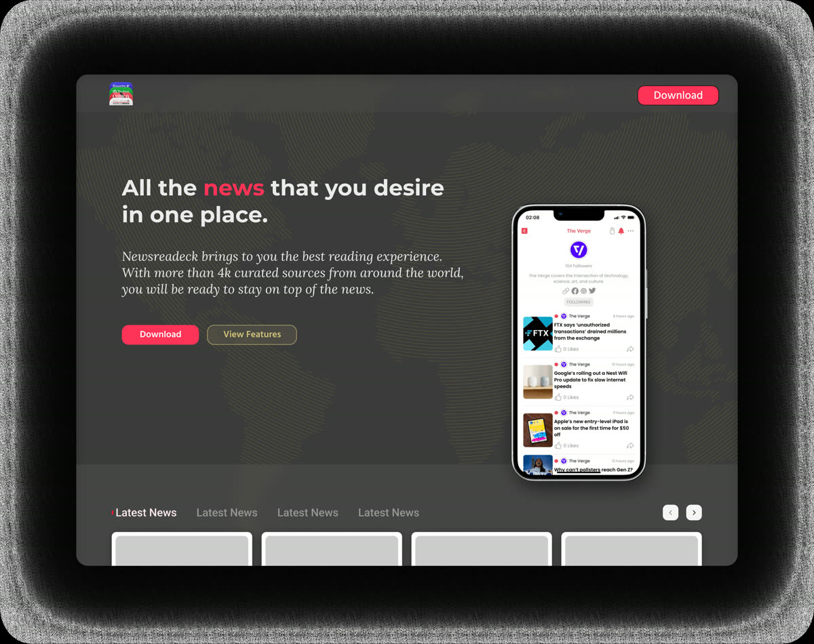
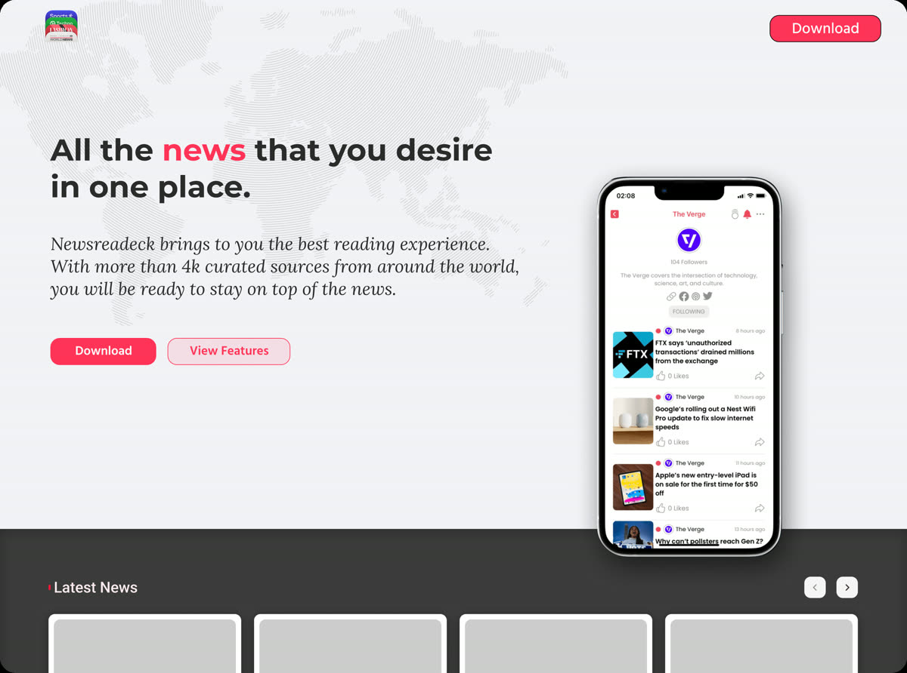
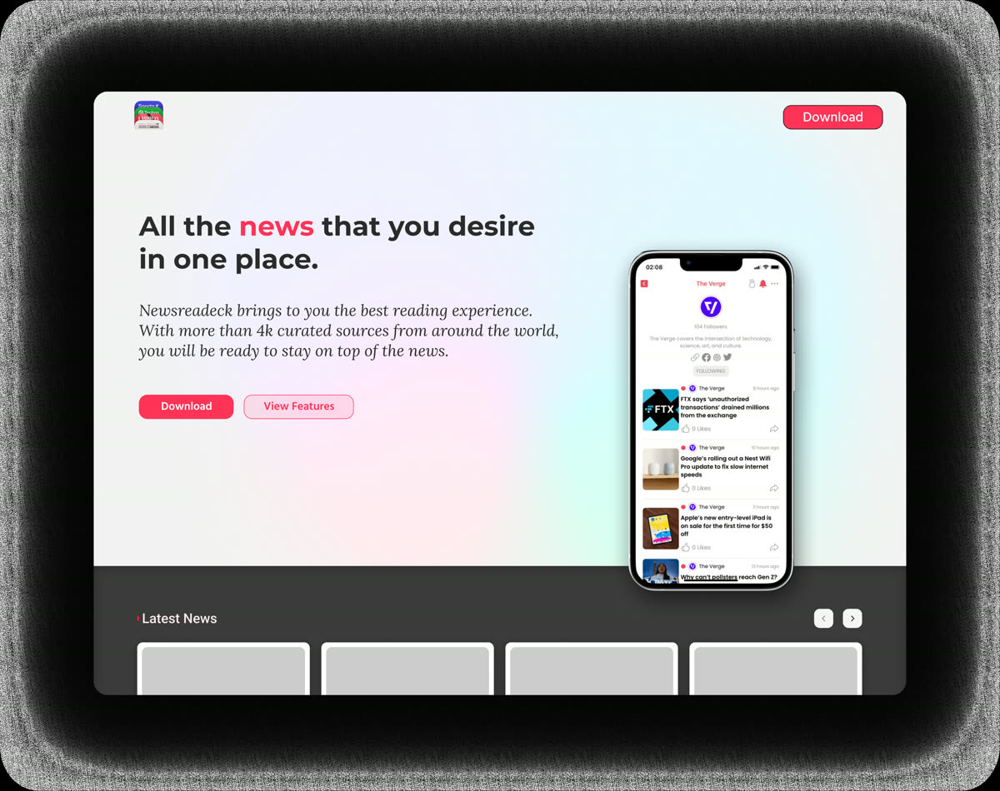
My Role
UX/UI end to end.
I designed Newsreadeck's UX and UI from the ground up as part of the Radium Rocket team, working in Figma. From information architecture and reading flows to the final visual system and responsive interfaces across web and mobile.
Discovery
Framing the product goals and mapping how people follow, read and revisit the news.
UX Flows
Adding sources, browsing feeds, the distraction-free reader, settings and listen mode.
UI Design
A clean, modern visual system and responsive components built for calm, focused reading.
Prototyping
Interactive prototypes to test reading comfort and the reader's customization controls.
Outcome
Live on the web and iOS,
free and ad-free.
Newsreadeck shipped as a live site at newsreadeck.app and a free iPhone app on the App Store, giving readers a single, quiet place to follow the outlets they love, read without distractions, and listen when they are on the move.